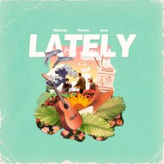

This person has the most vibey songs that I've listened so far! According to his bio, he is a religious man that also makes his own praise and worship songs on another account called "Forrest Frank".

khai dreams
Listened to his songs back in 2017, and truth be told that this was the person that motivated me to practice playing the ukelele when I had nothing much to do.
Stokeswood
I heard one of their songs in a game called "NBA 2K14", I wasn't the one playing the game though but my big brother. While he was playing, I heard one of their songs playing in the background, it was their music piece called "Forget" which until now is one of my favorites.
Louis Armstrong
As a kid, ever since I watched the movie "Madagascar" and heard one of his songs playing "What a Wonderful World" I disliked it because of how funny it was but later on I started wandering into his collection of music and they were good.
Frank Sinatra
I was introduced to this person from a friend, they told me to listen to one of the songs that he covered "Fly me to the moon" and It was really good as well as his other songs that he created.
Anthony Lazaro
A youtube singer that I've heard from someone else. He sings jazz songs that He creates his own songs both in the english and spanish language.
ONE OK ROCK
ONE OK ROCK is a Japanese band with a punk-rock/hard rock style. As of 2018, the band comprises of Takahiro Moriuchi (vocals), Toru Yamashita (lead guitar), Ryota Kohama (bass), and Tomoya Kanki (drums).
Mrs Green Apple
Mrs. GREEN APPLE is a three-member Japanese rock band from Tokyo that made its major debut in 2015 with EMI Records.
The Oral Cigarettes
The Oral Cigarettes is a four-member Japanese alternative rock band from Nara Prefecture, formed in July 2010.